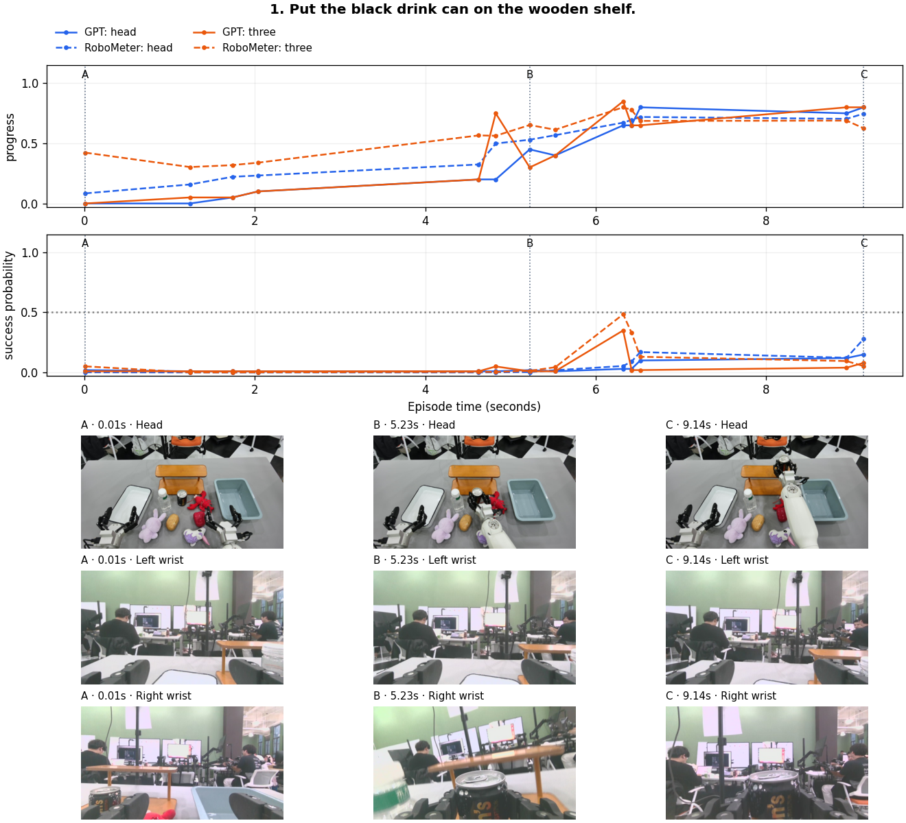
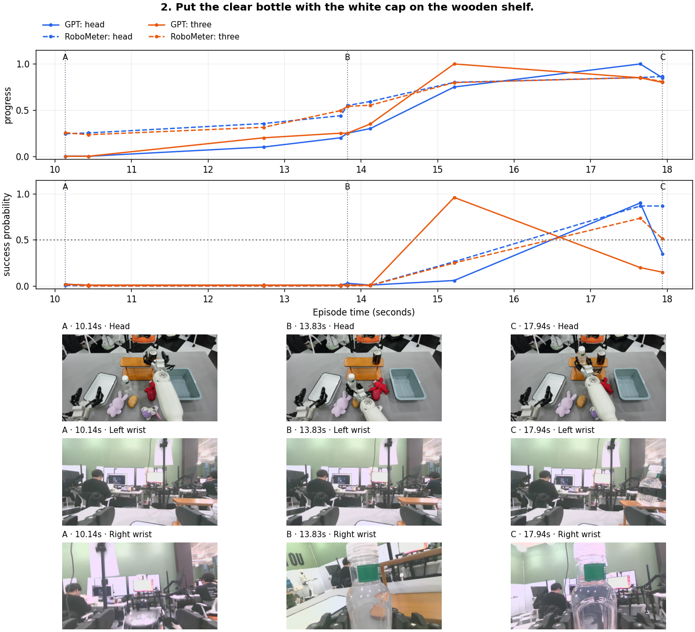
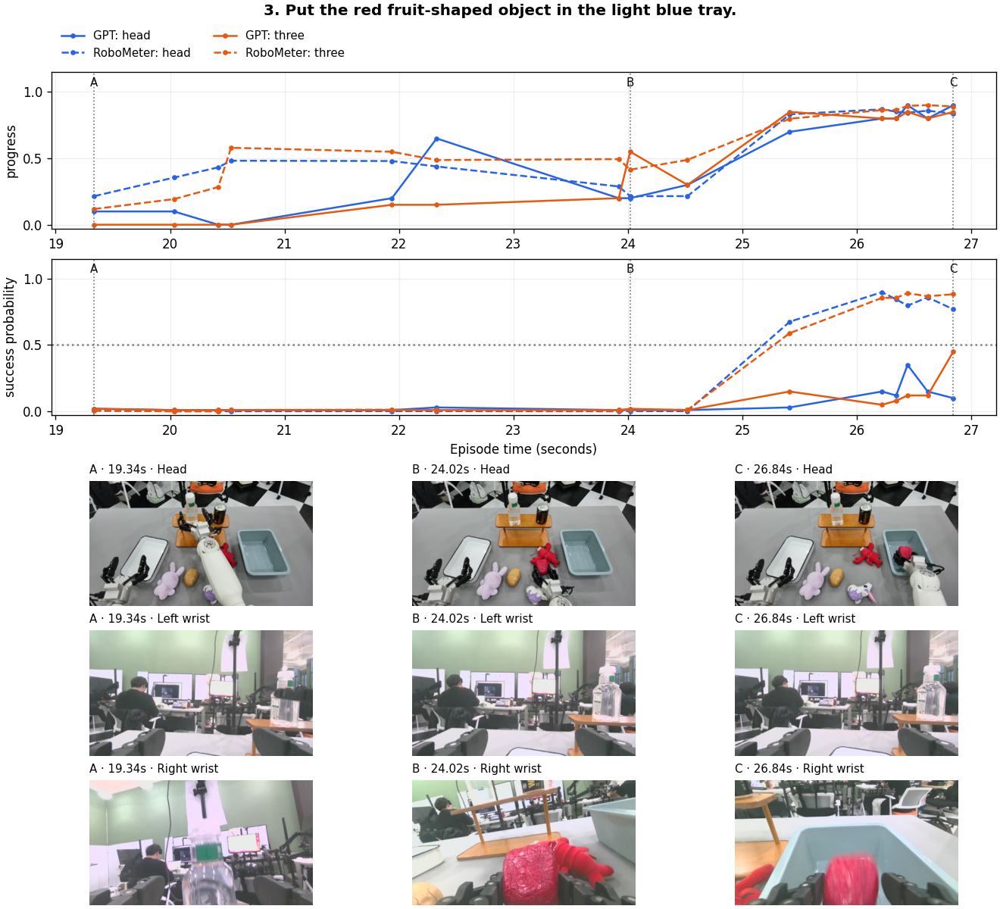
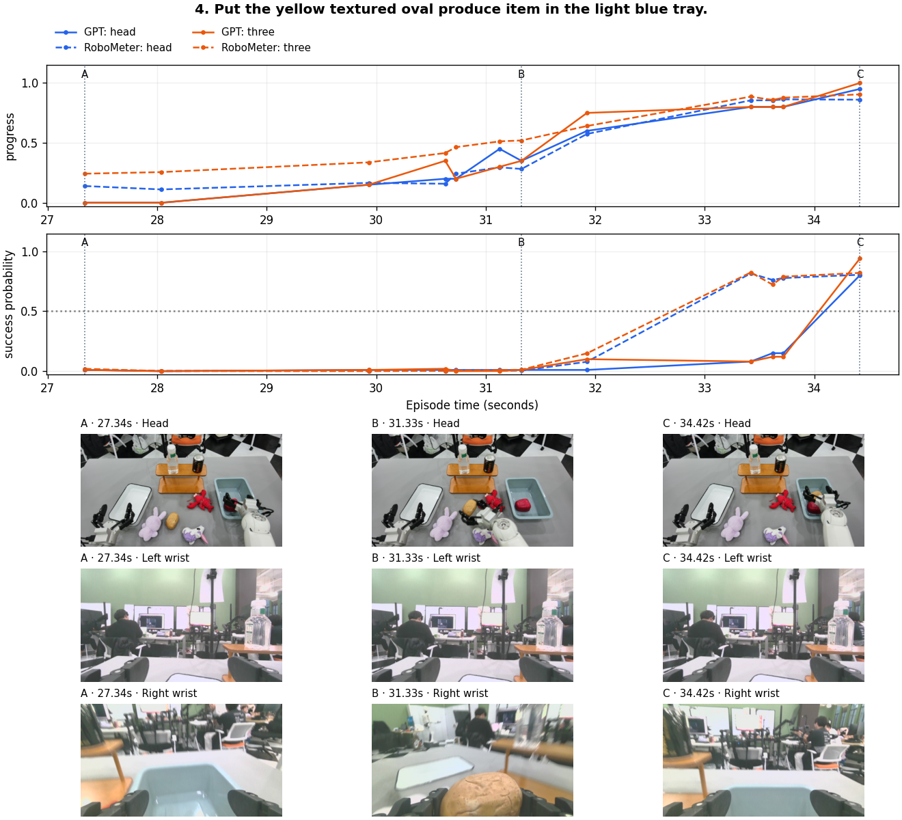
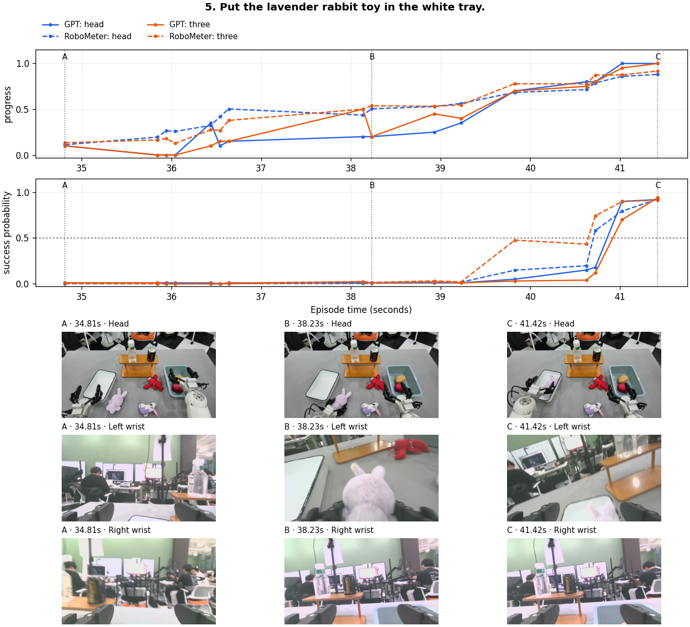
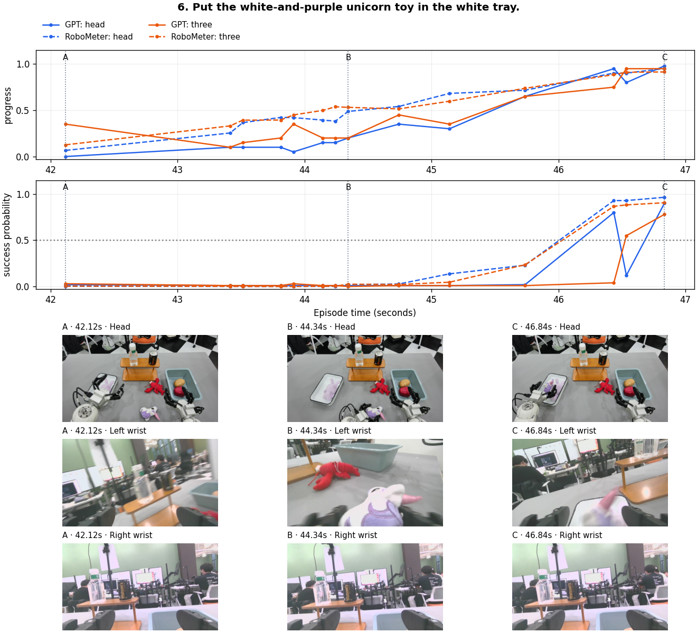
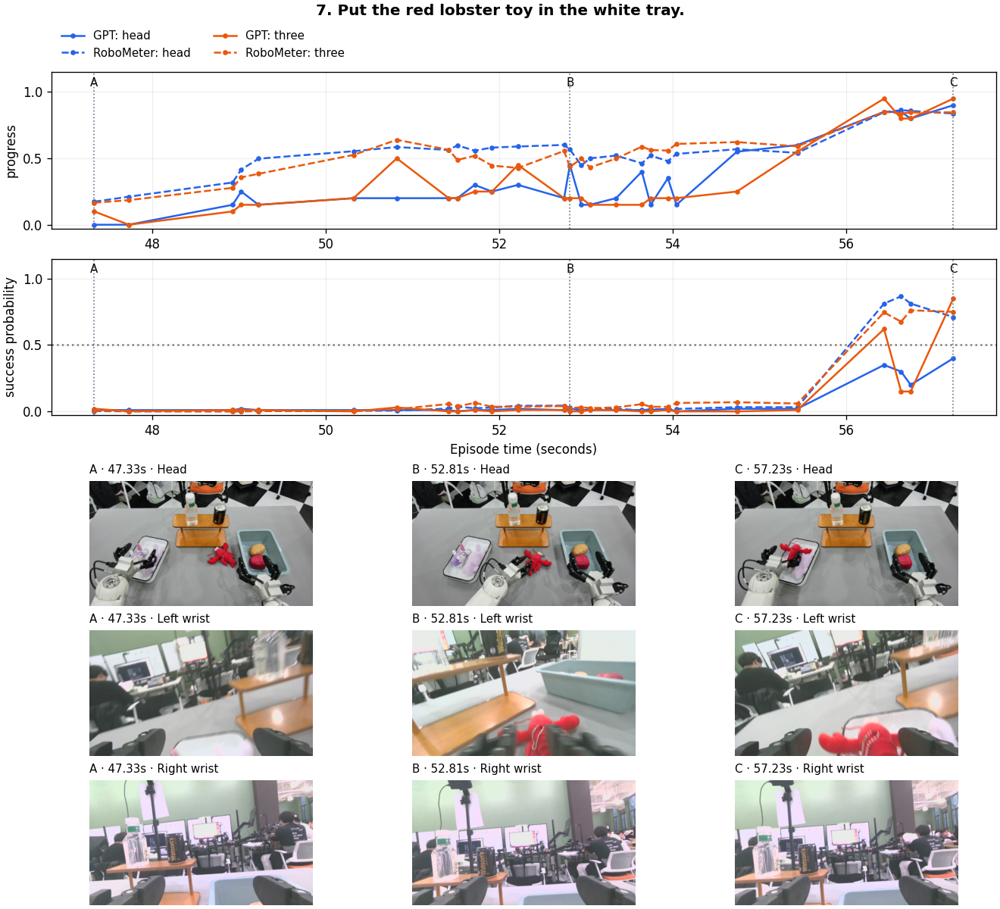
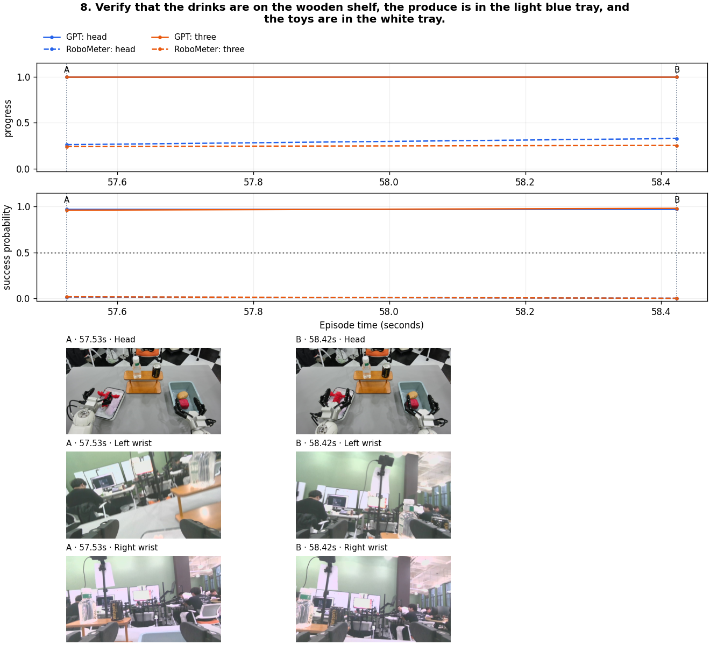

Run coverage: 914/914 camera/time-step judgments. GPT independently scored the same selected histories, without RoboMeter scores. GPT scores and probability estimates are not human ground truth or calibrated probabilities. Agreement does not establish accuracy. Three-camera images use horizontal tiles.
Complete: 216/216 judgments across 108 selected times. Blue: head only; orange: three cameras. Solid: GPT; dashed: RoboMeter. A/B/C match the image columns. Null GPT scores are gaps, not zero.

| Camera input | GPT final progress / success | RoboMeter at same time | GPT final evidence |
|---|---|---|---|
| head · 9.14s | 0.800 / 0.150 | 0.748 / 0.279 | The robot has lifted the black drink can and moved it upright over the right side of the wooden shelf. The gripper still surrounds the can; its base is obscured, and release or stable placement is not visible. |
| three · 9.14s | 0.800 / 0.080 | 0.626 / 0.053 | The robot has lifted the black drink can and positioned it upright over the wooden shelf. The gripper still surrounds the can; its base is obscured, and release or stable placement is not visible. |
Source annotation review notes: Task boundary: confirm release and next target in the original head/wrist images.
| Time / camera input | Progress / success | Status and evidence |
|---|---|---|
| 0.01s / head | 0.000 / 0.020 | not_success: The black drink can is visibly upright on the tabletop in front of the wooden shelf, not placed on the shelf. |
| 0.01s / three | 0.000 / 0.010 | not_success: The black drink can is upright on the tabletop in front of the wooden shelf. It is not grasped or placed on the shelf. |
| 1.24s / head | 0.000 / 0.010 | not_success: The black drink can remains upright on the tabletop in front of the wooden shelf. Neither gripper holds it, and no placement on the shelf is visible. |
| 1.24s / three | 0.050 / 0.010 | not_success: The black drink can is visibly still on the tabletop in front of the wooden shelf, not placed on the shelf; no release or stable placement on the shelf is shown. |
| 1.74s / head | 0.050 / 0.010 | not_success: The right gripper has moved toward the black can, but the can remains upright on the table in front of the wooden shelf. No grasp, lift, or placement is visible. |
| 1.74s / three | 0.050 / 0.010 | not_success: The black drink can is still visibly on the tabletop, while the wooden shelf remains empty. A gripper is nearby but has not visibly grasped or placed the can. |
| 2.04s / head | 0.100 / 0.010 | not_success: The right gripper has approached the black can, which remains upright on the table in front of the wooden shelf. No secure grasp, lift, or placement on the shelf is visible. |
| 2.04s / three | 0.100 / 0.010 | not_success: The right gripper has approached the black can, which remains upright on the table in front of the wooden shelf. No secure grasp, lift, or placement on the shelf is visible. |
| 4.63s / head | 0.200 / 0.010 | not_success: The right gripper is positioned around the black can in front of the wooden shelf. The can remains near its original tabletop position; no clear lift, placement on the shelf, or release is visible. |
| 4.63s / three | 0.200 / 0.010 | not_success: The right gripper is positioned around the black can in front of the wooden shelf. The can remains at its original tabletop location; no lift, placement on the shelf, or release is visible. |
| 4.83s / head | 0.200 / 0.010 | not_success: The right gripper has reached and closed around the black can in front of the wooden shelf. The can remains near its original tabletop position; no lift, placement on the shelf, or release is visible, and the gripper partly obscures its lower half. |
| 4.83s / three | 0.750 / 0.050 | not_success: The black can is visibly held by the robot gripper near the wooden shelf, but it remains in the gripper below/in front of the shelf and no release or stable placement on the shelf is visible. |
| 5.23s / head | 0.450 / 0.020 | not_success: The black can is still visible near the front edge of the wooden shelf, apparently held or occluded by the gripper, but it is not visibly placed on the shelf and stable release is not shown. |
| 5.23s / three | 0.300 / 0.010 | not_success: The right gripper surrounds the black can and appears to begin lifting it in front of the wooden shelf. The can remains held, with no visible placement or release on the shelf. |
| 5.53s / head | 0.400 / 0.010 | not_success: The right gripper holds the black drink can lifted above its original tabletop position and near the wooden shelf. The can remains in the gripper; no release or stable placement on the shelf is visible. |
| 5.53s / three | 0.400 / 0.010 | not_success: The right gripper holds the black drink can and has lifted it toward the wooden shelf. The can remains in the gripper; no release or stable placement on the shelf is visible. |
| 6.32s / head | 0.650 / 0.030 | not_success: The right gripper has lifted the black drink can and moved it near the wooden shelf's upper surface. The can remains held; release and stable placement on the shelf are not visible. |
| 6.32s / three | 0.850 / 0.350 | not_success: The black can is visibly held by the gripper and positioned over the wooden shelf, but the gripper still appears attached, so release and stable placement are not confirmed. |
| 6.42s / head | 0.650 / 0.030 | not_success: The robot has lifted the black drink can and moved it near the wooden shelf. At the last snapshot, the gripper still holds the can; release and stable placement on the shelf are not visible. |
| 6.42s / three | 0.650 / 0.020 | not_success: The right gripper has lifted the black drink can and moved it toward the wooden shelf. At the last snapshot the can remains held between the gripper fingers near the shelf; release and stable placement are not visible. |
| 6.52s / head | 0.800 / 0.100 | not_success: The black can is visibly grasped above the wooden shelf, but it remains held by the gripper and has not been released or shown stably placed on the shelf. |
| 6.52s / three | 0.650 / 0.020 | not_success: The right gripper has lifted the black drink can and moved it toward the wooden shelf. At the last snapshot the can remains held between the gripper fingers; its base is obscured, and no release or stable placement on the shelf is visible. |
| 8.94s / head | 0.750 / 0.120 | not_success: The robot has lifted the black drink can and moved it over the right side of the wooden shelf. The gripper still surrounds the can; its base is obscured, and release and stable placement are not visible. |
| 8.94s / three | 0.800 / 0.040 | not_success: The black can is visibly held by the robot gripper above/near the wooden shelf, but it has not been released or shown resting stably on the shelf. |
| 9.14s / head | 0.800 / 0.150 | not_success: The robot has lifted the black drink can and moved it upright over the right side of the wooden shelf. The gripper still surrounds the can; its base is obscured, and release or stable placement is not visible. |
| 9.14s / three | 0.800 / 0.080 | not_success: The robot has lifted the black drink can and positioned it upright over the wooden shelf. The gripper still surrounds the can; its base is obscured, and release or stable placement is not visible. |

| Camera input | GPT final progress / success | RoboMeter at same time | GPT final evidence |
|---|---|---|---|
| head · 17.94s | 0.850 / 0.350 | 0.864 / 0.867 | The clear white-capped bottle is upright at the wooden shelf, beside the can. The gripper still surrounds its lower portion, obscuring contact with the shelf; release and stable unsupported placement are not confirmed. |
| three · 17.94s | 0.800 / 0.150 | 0.809 / 0.512 | The clear white-capped bottle has been moved upright onto or just above the wooden shelf beside the can. The gripper still surrounds the bottle; release and stable unsupported placement are not visible. |
Source annotation review notes: Task boundary: confirm release and next target in the original head/wrist images.
| Time / camera input | Progress / success | Status and evidence |
|---|---|---|
| 10.14s / head | 0.000 / 0.020 | not_success: The clear bottle with the white cap is standing on the tabletop in front of the wooden shelf, not on it. No grasp of that bottle is visible. |
| 10.14s / three | 0.000 / 0.020 | not_success: The clear bottle with the white cap is upright on the tabletop in front of the wooden shelf, not on it. Neither gripper visibly holds the bottle, and no placement on the shelf is shown. |
| 10.44s / head | 0.000 / 0.010 | not_success: The clear bottle with the white cap remains upright on the tabletop in front of the wooden shelf. The robot's gripper is above the shelf, away from the bottle; no grasp or placement of the target is visible. |
| 10.44s / three | 0.000 / 0.010 | not_success: The clear bottle with the white cap remains upright on the tabletop in front of the wooden shelf. The right gripper is near the shelf, but no grasp or placement of the target bottle is visible. |
| 12.73s / head | 0.100 / 0.010 | not_success: The clear bottle with the white cap is still visibly standing on the tabletop below the wooden shelf in the last frame; it is not on the shelf. The robot arm is nearby, but no stable placement is visible. |
| 12.73s / three | 0.200 / 0.010 | not_success: The gripper is positioned around the clear white-capped bottle, which remains upright on the tabletop in front of the wooden shelf. No lift, placement on the shelf, or release is visible. |
| 13.74s / head | 0.200 / 0.010 | not_success: The gripper is positioned around the clear white-capped bottle in front of the wooden shelf. The bottle remains at table level; no lift, placement on the shelf, or release is visible. Grasp security is partly obscured. |
| 13.74s / three | 0.250 / 0.010 | not_success: The right gripper surrounds the clear white-capped bottle near its original tabletop position in front of the wooden shelf. A grasp appears underway, but no transport onto the shelf, release, or stable placement is visible. |
| 13.83s / head | 0.250 / 0.030 | not_success: The clear bottle with the white cap is still visibly upright on the tabletop in front of the wooden shelf, with the robot gripper nearby/partly occluding it; it is not visibly released or stably placed on the shelf. |
| 13.83s / three | 0.250 / 0.010 | not_success: The right gripper surrounds the clear white-capped bottle near the tabletop in front of the wooden shelf. A secure lift is not clearly visible, and the bottle has not been placed or released on the shelf. |
| 14.12s / head | 0.300 / 0.010 | not_success: The right gripper appears to hold and slightly lift the clear white-capped bottle in front of the wooden shelf. The bottle has not been placed or released on the shelf; its lower portion is partly obscured by the gripper. |
| 14.12s / three | 0.350 / 0.010 | not_success: The right gripper appears to hold the clear white-capped bottle upright in front of the wooden shelf, beginning to lift it. The bottle remains in the gripper; no release or stable placement on the shelf is visible. |
| 15.22s / head | 0.750 / 0.060 | not_success: The gripper has lifted the clear white-capped bottle and brought it over the wooden shelf beside the can. It still visibly holds the bottle; release and stable placement are not shown, and the bottle base is partly occluded. |
| 15.22s / three | 1.000 / 0.960 | success: The clear bottle with the white cap is visibly upright on the wooden shelf in the final overhead view, with the gripper withdrawn and no apparent occlusion of its stable placement. |
| 17.65s / head | 1.000 / 0.900 | success: The clear bottle with the white cap is visibly upright on the wooden shelf at the final time step; the gripper is adjacent and no longer visibly holding it. |
| 17.65s / three | 0.850 / 0.200 | not_success: The clear bottle with the white cap has been lifted and positioned upright on the wooden shelf beside the can. The gripper still surrounds the bottle; release and stable unsupported placement are not visible. |
| 17.94s / head | 0.850 / 0.350 | not_success: The clear white-capped bottle is upright at the wooden shelf, beside the can. The gripper still surrounds its lower portion, obscuring contact with the shelf; release and stable unsupported placement are not confirmed. |
| 17.94s / three | 0.800 / 0.150 | not_success: The clear white-capped bottle has been moved upright onto or just above the wooden shelf beside the can. The gripper still surrounds the bottle; release and stable unsupported placement are not visible. |

| Camera input | GPT final progress / success | RoboMeter at same time | GPT final evidence |
|---|---|---|---|
| head · 26.84s | 0.900 / 0.100 | 0.837 / 0.770 | The red fruit-shaped object is visibly held by the gripper over the light blue tray, but the gripper has not released it, so stable placement is not confirmed. |
| three · 26.84s | 0.850 / 0.450 | 0.890 / 0.883 | The red fruit-shaped object has been transported into the light blue tray. In the final snapshot it appears to be dropping between the opening gripper fingers, but motion blur and gripper occlusion prevent confirmation of full release and stable placement. |
Source annotation review notes: Task boundary: confirm release and next target in the original head/wrist images.
| Time / camera input | Progress / success | Status and evidence |
|---|---|---|
| 19.34s / head | 0.100 / 0.020 | not_success: The light blue tray is visibly empty. The red fruit-shaped object remains on the tabletop beside/partly occluded by the white bottle, not stably placed in the tray. |
| 19.34s / three | 0.000 / 0.020 | not_success: The light blue tray is visibly empty. A red object is outside the tray, partly obscured by the robot arm; no placement or release into the tray is visible. |
| 20.03s / head | 0.100 / 0.010 | not_success: The red fruit-shaped object is partially visible beside/behind the robot body, not inside the light blue tray. The tray appears empty, and no stable placement is visible. |
| 20.03s / three | 0.000 / 0.010 | not_success: The light blue tray is visibly empty at the last time step. A red object remains on the tabletop beside the robot arm, partly occluded; no grasp, transfer, or released placement in the tray is visible. |
| 20.42s / head | 0.000 / 0.010 | not_success: The light blue tray is visibly empty. The red object remains on the tabletop beside the tray, partly obscured by the robot arm; no grasp or placement is visible. |
| 20.42s / three | 0.000 / 0.010 | not_success: The light blue tray is visibly empty. The red fruit-shaped object remains on the tabletop beside the tray, partly occluded by the robot arm; no grasp or placement is visible. |
| 20.53s / head | 0.000 / 0.010 | not_success: The light blue tray is visibly empty, and the raised gripper appears empty. A red object remains on the table beside the tray, partly occluded by the robot arm; no successful placement is visible. |
| 20.53s / three | 0.000 / 0.010 | not_success: The red fruit-shaped object remains on the tabletop beside the light blue tray, partially obscured by the robot arm. The tray appears empty, and no grasp or placement is visible. |
| 21.94s / head | 0.200 / 0.010 | not_success: The gripper is positioned around the red object beside the light blue tray, but a secure grasp is unclear. The tray is visibly empty; no placement or release into it is shown. |
| 21.94s / three | 0.150 / 0.010 | not_success: The right gripper is near the red objects beside the light blue tray, but a secure grasp of the fruit-shaped object is unclear due to occlusion. The tray remains visibly empty; no release or placement is shown. |
| 22.33s / head | 0.650 / 0.030 | not_success: The red fruit-shaped object is visibly held near the gripper beside the light blue tray, but the tray appears empty and the object has not been released or stably placed inside it. |
| 22.33s / three | 0.150 / 0.010 | not_success: The right gripper is positioned around the red object beside the light blue tray, but no secure grasp or lift is visible. The tray remains empty, with no release or placement shown. |
| 23.92s / head | 0.200 / 0.010 | not_success: The right gripper is positioned around the red fruit-shaped object on the table beside the light blue tray. The tray remains empty; no lift, transfer, or released placement is visible. |
| 23.92s / three | 0.200 / 0.010 | not_success: The gripper is positioned around the red fruit-shaped object, which remains outside the light blue tray near the tabletop. The tray is visibly empty; no lift, release, or placement inside it is shown. |
| 24.02s / head | 0.200 / 0.010 | not_success: The right gripper is positioned around the red fruit-shaped object beside the light blue tray. A secure grasp or lift is not confirmed; the tray remains empty, with no placement or release visible. |
| 24.02s / three | 0.550 / 0.020 | not_success: The red fruit-shaped object is visibly held by the gripper near the lower-right area, while the light blue tray remains separate and appears empty; release and stable placement in the tray are not visible. |
| 24.52s / head | 0.300 / 0.010 | not_success: The gripper surrounds the red fruit-shaped object beside the light blue tray, apparently beginning a grasp or lift. The tray remains empty; no transport into it or released placement is visible. |
| 24.52s / three | 0.300 / 0.010 | not_success: The right gripper appears to hold the red fruit-shaped object beside the light blue tray. The tray remains empty; no transfer into it or release is visible, and lift clearance is uncertain. |
| 25.41s / head | 0.700 / 0.030 | not_success: The gripper has lifted the red strawberry-shaped object and moved it over the light blue tray. It remains held above the tray; release and stable placement are not visible. |
| 25.41s / three | 0.850 / 0.150 | not_success: The red fruit-shaped object is visibly positioned over the light blue tray, but it remains held by the gripper, so release and stable placement are not yet shown. |
| 26.22s / head | 0.800 / 0.150 | not_success: The robot has lifted the red fruit-shaped object and moved it into the light blue tray area, but the gripper still surrounds it. Release and stable placement on the tray bottom are not visible. |
| 26.22s / three | 0.800 / 0.050 | not_success: The red fruit-shaped object has been lifted and moved into the light blue tray area, but remains held between the right gripper fingers. Release and stable placement are not visible. |
| 26.34s / head | 0.800 / 0.120 | not_success: The robot has moved the red fruit-shaped object into the light blue tray area, but the gripper still appears to hold it. Release and stable placement are not visible. |
| 26.34s / three | 0.800 / 0.080 | not_success: The robot has grasped the red fruit-shaped object and lowered it within the light blue tray, but the gripper still surrounds it. Release and stable placement are not visible. |
| 26.44s / head | 0.900 / 0.350 | not_success: The red fruit-shaped object is visibly inside the light blue tray, but the gripper is still holding/contacting it, so release and stable placement are not confirmed. |
| 26.44s / three | 0.850 / 0.120 | not_success: The robot has moved the red fruit-shaped object into the light blue tray area, but the gripper still appears closed around it. Release and stable placement are not visible. |
| 26.62s / head | 0.800 / 0.150 | not_success: The robot has moved the red fruit-shaped object into the light blue tray area and lowered it, but the gripper still surrounds it. Release and stable placement on the tray bottom are not visible. |
| 26.62s / three | 0.800 / 0.120 | not_success: The robot has lifted the red fruit-shaped object and lowered it into the light blue tray area. At the last snapshot the gripper still surrounds the object; release and stable unsupported placement are not visible. |
| 26.84s / head | 0.900 / 0.100 | not_success: The red fruit-shaped object is visibly held by the gripper over the light blue tray, but the gripper has not released it, so stable placement is not confirmed. |
| 26.84s / three | 0.850 / 0.450 | not_success: The red fruit-shaped object has been transported into the light blue tray. In the final snapshot it appears to be dropping between the opening gripper fingers, but motion blur and gripper occlusion prevent confirmation of full release and stable placement. |

| Camera input | GPT final progress / success | RoboMeter at same time | GPT final evidence |
|---|---|---|---|
| head · 34.42s | 0.950 / 0.800 | 0.860 / 0.805 | The yellow textured oval item has been moved into the light blue tray and appears released between the opened gripper fingers. The gripper partly occludes the item, so stable placement is not fully confirmed. |
| three · 34.42s | 1.000 / 0.940 | 0.905 / 0.820 | The yellow textured oval item is visible inside the light blue tray behind the red object. The gripper has opened and moved away from the item, indicating release; the arm partly obscures its resting position. |
Source annotation review notes: Task boundary: confirm release and next target in the original head/wrist images.
| Time / camera input | Progress / success | Status and evidence |
|---|---|---|
| 27.34s / head | 0.000 / 0.010 | not_success: The yellow textured oval produce item is on the tabletop beside the purple plush toy, outside the light blue tray on the right. No grasp or placement of the item is visible. |
| 27.34s / three | 0.000 / 0.010 | not_success: The yellow textured oval item is visible on the tabletop beside the purple plush, outside the light blue tray. No grasp or placement of the item is visible. |
| 28.04s / head | 0.000 / 0.000 | not_success: The yellow textured oval produce item is still visibly on the table below the wooden stand, while the light blue tray is at upper right; it has not been placed in the tray. |
| 28.04s / three | 0.000 / 0.000 | not_success: The yellow textured oval item remains on the tabletop beside the purple plush, outside the light blue tray. The robot's gripper is near the tray but is not holding the target item. |
| 29.93s / head | 0.150 / 0.010 | not_success: The right gripper is positioned around the yellow textured oval item, which remains on the tabletop beside the purple plush. No lift or release is visible; the light blue tray contains a red item, not the yellow target. |
| 29.93s / three | 0.150 / 0.010 | not_success: The yellow textured oval item remains on the tabletop beside the purple plush, with the right gripper positioned around it. No lift or placement is visible; the light blue tray contains a red item, not the yellow produce. |
| 30.63s / head | 0.200 / 0.010 | not_success: The gripper is positioned around the yellow textured oval item beside the purple toy, outside the light blue tray. A secure grasp or lift is not clear; no placement or release in the tray is visible. |
| 30.63s / three | 0.350 / 0.020 | not_success: The yellow textured oval produce is still visibly on the tabletop near the robot gripper, while the light blue tray contains a different red item. No stable placement of the yellow item in the tray is visible. |
| 30.73s / head | 0.200 / 0.010 | not_success: The gripper is positioned around the yellow textured oval item near the tabletop, outside the light blue tray. A secure grasp or lift is not confirmed, and no placement or release in the tray is visible. |
| 30.73s / three | 0.200 / 0.000 | not_success: The right gripper is positioned around the yellow textured oval item beside the purple plush, outside the light blue tray. A secure grasp or lift is not established, and no transfer or release into the tray is visible. |
| 31.13s / head | 0.450 / 0.010 | not_success: The yellow textured oval is still visible near the robot gripper outside the light blue tray; the tray contains a red item instead. No stable placement of the yellow item is visible. |
| 31.13s / three | 0.300 / 0.001 | not_success: The right gripper surrounds the yellow textured oval item and appears to begin lifting it beside the purple plush. It remains outside the light blue tray, which contains a red object; no release or placement of the yellow item is visible. |
| 31.33s / head | 0.350 / 0.010 | not_success: The right gripper appears to have grasped and lifted the yellow textured oval item. It remains held to the left of the light blue tray; no placement or release into the tray is visible. |
| 31.33s / three | 0.350 / 0.010 | not_success: The right gripper holds the yellow textured oval item and has lifted it from the table. It remains outside the light blue tray; no release or placement is visible. |
| 31.92s / head | 0.600 / 0.010 | not_success: The right gripper has lifted the yellow textured oval item and moved it toward the light blue tray. At the last snapshot it remains held near the tray's left edge; no release or stable placement inside the tray is visible. |
| 31.92s / three | 0.750 / 0.100 | not_success: The yellow textured oval is visibly held by the gripper and positioned over/near the light blue tray, but the gripper has not released it and stable placement inside the tray is not shown. |
| 33.42s / head | 0.800 / 0.080 | not_success: The robot has lifted the yellow textured oval item and moved it over the light blue tray. At the last snapshot it remains between the gripper fingers; release and stable placement in the tray are not visible. |
| 33.42s / three | 0.800 / 0.080 | not_success: The right gripper has lifted the yellow textured oval item and moved it over the light blue tray. At the last snapshot it remains between the gripper fingers; release and stable placement in the tray are not visible. |
| 33.62s / head | 0.800 / 0.150 | not_success: The robot has lifted the yellow textured oval item and moved it into the light blue tray area. At the last snapshot it remains between the gripper fingers; release and stable placement are not visible. |
| 33.62s / three | 0.800 / 0.120 | not_success: The right gripper has lifted the yellow textured oval item and moved it over the light blue tray. At the last snapshot the item remains between the gripper fingers; release and stable placement in the tray are not visible. |
| 33.72s / head | 0.800 / 0.150 | not_success: The robot has lifted the yellow textured oval item and moved it into the light blue tray area. At the last snapshot the gripper still surrounds the item; release and stable placement are not visible. |
| 33.72s / three | 0.800 / 0.120 | not_success: The yellow textured oval item has been lifted and moved into the light blue tray area, but remains between the right gripper fingers. Release and stable placement are not visible. |
| 34.42s / head | 0.950 / 0.800 | success: The yellow textured oval item has been moved into the light blue tray and appears released between the opened gripper fingers. The gripper partly occludes the item, so stable placement is not fully confirmed. |
| 34.42s / three | 1.000 / 0.940 | success: The yellow textured oval item is visible inside the light blue tray behind the red object. The gripper has opened and moved away from the item, indicating release; the arm partly obscures its resting position. |

| Camera input | GPT final progress / success | RoboMeter at same time | GPT final evidence |
|---|---|---|---|
| head · 41.42s | 1.000 / 0.920 | 0.880 / 0.926 | The lavender rabbit is lying inside the white tray, and the gripper appears open after lowering it. The nearby gripper partially obscures the toy, but placement and release appear complete. |
| three · 41.42s | 1.000 / 0.940 | 0.918 / 0.914 | The lavender rabbit is lying inside the white tray at the last snapshot. The left gripper is open around it, indicating release; the toy appears supported by the tray, though no later snapshot confirms continued stability. |
Source annotation review notes: Task boundary: confirm release and next target in the original head/wrist images.
| Time / camera input | Progress / success | Status and evidence |
|---|---|---|
| 34.81s / head | 0.100 / 0.010 | not_success: The lavender rabbit is visibly lying on the tabletop near the lower left-center, outside the empty white tray at upper left; no placement or release in the tray is visible. |
| 34.81s / three | 0.100 / 0.010 | not_success: The lavender rabbit is visibly still on the tabletop below the white tray, which appears empty; no stable placement or release in the tray is shown. |
| 35.84s / head | 0.000 / 0.010 | not_success: The lavender rabbit remains on the tabletop beside the empty white tray. Neither gripper is holding it, and no placement is visible. |
| 35.84s / three | 0.000 / 0.010 | not_success: The lavender rabbit remains on the tabletop beside the empty white tray at the last time step. Neither gripper visibly holds the rabbit, and no placement has occurred. |
| 35.94s / head | 0.000 / 0.010 | not_success: The lavender rabbit remains on the tabletop beside the empty white tray. Neither gripper visibly holds it, and no placement in the tray is shown. |
| 35.94s / three | 0.000 / 0.001 | not_success: The lavender rabbit remains on the tabletop beside the empty white tray at the last snapshot. Neither gripper holds it, and no placement in the tray is visible. |
| 36.04s / head | 0.000 / 0.010 | not_success: The lavender rabbit toy is visibly on the table below the wooden stand, outside the empty white tray on the left. No placement or release into the tray is visible. |
| 36.04s / three | 0.000 / 0.000 | not_success: The lavender rabbit remains on the tabletop beside the empty white tray at the last time step. No grasp or placement of the rabbit is visible. |
| 36.44s / head | 0.350 / 0.010 | not_success: The lavender rabbit is still visible on the tabletop near the robot gripper, while the white tray remains empty. The gripper appears to be approaching or contacting the rabbit, but no placement or release in the tray is visible. |
| 36.44s / three | 0.100 / 0.000 | not_success: The left gripper has approached the lavender rabbit, which remains on the tabletop beside the empty white tray. No lift, transfer, or placement is visible; the gripper partly obscures the rabbit. |
| 36.54s / head | 0.100 / 0.000 | not_success: The left gripper has approached the lavender rabbit, which remains on the tabletop beside the empty white tray. The gripper partly obscures the toy, but no lift or placement is visible. |
| 36.54s / three | 0.150 / 0.000 | not_success: The left gripper has approached and partly surrounds the lavender rabbit, which remains on the tabletop beside the empty white tray. No lift, transfer, or released placement in the tray is visible; gripper contact partly obscures the toy. |
| 36.64s / head | 0.150 / 0.010 | not_success: The left gripper has approached and partly surrounds the lavender rabbit, which remains on the tabletop beside the empty white tray. No secure lift or placement in the tray is visible. |
| 36.64s / three | 0.150 / 0.001 | not_success: The left gripper has approached and partly surrounds the lavender rabbit, which remains on the tabletop beside the empty white tray. No lift, transfer, or release into the tray is visible; the gripper partially obscures contact. |
| 38.13s / head | 0.200 / 0.010 | not_success: The left gripper is positioned around the lavender rabbit, which remains on the tabletop beside the empty white tray. The gripper partly occludes the toy; no lift, transfer, or placement is visible. |
| 38.13s / three | 0.500 / 0.020 | not_success: The lavender rabbit is visibly grasped by the gripper in the last frame, but it is still outside the white tray; the tray is visible to the left and no release or stable placement is shown. |
| 38.23s / head | 0.200 / 0.010 | not_success: The left gripper is positioned around the lavender rabbit on the tabletop beside the empty white tray. The rabbit is partly occluded by the gripper, but no lift, transfer into the tray, or released placement is visible. |
| 38.23s / three | 0.200 / 0.010 | not_success: The left gripper is positioned around the lavender rabbit beside the white tray. The rabbit remains outside the empty tray; a secure grasp or lift is unclear, and no release or placement is visible. |
| 38.93s / head | 0.250 / 0.010 | not_success: The left gripper appears to hold and slightly lift the lavender rabbit beside the white tray. The tray remains empty; no transport into it or release is visible. |
| 38.93s / three | 0.450 / 0.020 | not_success: The lavender rabbit is visibly held by the gripper near the bottom of the table, while the white tray remains empty at upper left; placement and release into the tray have not occurred. |
| 39.23s / head | 0.350 / 0.010 | not_success: The left gripper appears to have grasped and lifted the lavender rabbit beside the white tray. The tray remains empty; no placement or release is visible. |
| 39.23s / three | 0.400 / 0.010 | not_success: The left gripper has lifted the lavender rabbit beside the white tray. The rabbit remains held outside the tray; no release or stable placement is visible. |
| 39.83s / head | 0.700 / 0.050 | not_success: The left gripper has lifted the lavender rabbit and moved it over the white tray. The rabbit still appears held by the gripper; release and stable placement in the tray are not visible. |
| 39.83s / three | 0.700 / 0.030 | not_success: The left gripper has lifted the lavender rabbit and moved it over the white tray. At the last snapshot it remains visibly held above the tray; no release or stable placement is shown. |
| 40.62s / head | 0.800 / 0.150 | not_success: The lavender rabbit is visibly positioned over the white tray but remains held by the robotic gripper; release and stable placement in the tray are not visible. |
| 40.62s / three | 0.750 / 0.040 | not_success: The lavender rabbit has been lifted and moved over the white tray, but remains visibly held by the left gripper. Release and stable placement in the tray are not shown. |
| 40.73s / head | 0.800 / 0.180 | not_success: The lavender rabbit has been moved into the white tray's footprint and lowered, but the left gripper still surrounds its body. Release and stable placement are not visibly confirmed. |
| 40.73s / three | 0.800 / 0.120 | not_success: The lavender rabbit has been moved over and lowered toward the white tray, but the left gripper still appears to hold it. Release and stable placement are not visible. |
| 41.02s / head | 1.000 / 0.900 | success: The lavender rabbit is visibly resting inside the white tray at the last time step. The gripper remains near the tray and partially occludes the object, but the rabbit appears released and stably placed. |
| 41.02s / three | 0.950 / 0.700 | success: The lavender rabbit is visibly positioned inside the white tray at the final timestep. The gripper remains nearby and partially occludes the rabbit, so full release is somewhat uncertain, but the rabbit appears settled in the tray. |
| 41.42s / head | 1.000 / 0.920 | success: The lavender rabbit is lying inside the white tray, and the gripper appears open after lowering it. The nearby gripper partially obscures the toy, but placement and release appear complete. |
| 41.42s / three | 1.000 / 0.940 | success: The lavender rabbit is lying inside the white tray at the last snapshot. The left gripper is open around it, indicating release; the toy appears supported by the tray, though no later snapshot confirms continued stability. |

| Camera input | GPT final progress / success | RoboMeter at same time | GPT final evidence |
|---|---|---|---|
| head · 46.84s | 0.980 / 0.900 | 0.952 / 0.965 | The white-and-purple unicorn is visibly inside the white tray at the left, resting on the tray contents; the gripper is beside it and no longer visibly carrying it, though the fingers partially occlude the tray edge. |
| three · 46.84s | 0.950 / 0.780 | 0.915 / 0.906 | The unicorn was carried over the white tray, and the final view shows the gripper open with the toy dropping into the tray. Motion blur and partial gripper occlusion prevent confirming fully settled placement. |
Source annotation review notes: Task boundary: confirm release and next target in the original head/wrist images.
| Time / camera input | Progress / success | Status and evidence |
|---|---|---|
| 42.12s / head | 0.000 / 0.020 | not_success: The white-and-purple unicorn toy is lying on the tabletop near the bottom center, outside the white tray on the left. No grasp or placement of the toy in the tray is visible. |
| 42.12s / three | 0.350 / 0.030 | not_success: The white-and-purple unicorn is visibly lying on the tabletop outside the light-colored tray, which already contains other objects. No stable placement inside the tray or release is visible. |
| 43.41s / head | 0.100 / 0.010 | not_success: The white-and-purple unicorn remains on the tabletop outside the white tray, near the left gripper. A different pale-purple toy is already in the tray; no grasp or placement of the unicorn is visible. |
| 43.41s / three | 0.100 / 0.010 | not_success: The white-and-purple unicorn remains on the tabletop outside the white tray. A gripper is near the toy, but no secure grasp or placement is visible; the tray contains a different pale-purple toy. |
| 43.51s / head | 0.100 / 0.010 | not_success: The white-and-purple unicorn remains on the tabletop near the left gripper, outside the white tray on the left. The gripper has approached it, but no secure grasp, lift, or placement is visible. |
| 43.51s / three | 0.150 / 0.010 | not_success: The white-and-purple unicorn remains on the tabletop outside the white tray. The left gripper is near the toy, but no secure grasp, lift, or placement is visible; a separate pale-purple object is already in the tray. |
| 43.81s / head | 0.100 / 0.010 | not_success: The white-and-purple unicorn remains on the tabletop beside the left gripper, outside the white tray. The gripper has approached it, but no secure grasp, lift, or placement is visible. |
| 43.81s / three | 0.200 / 0.010 | not_success: The left gripper has approached and partly surrounds the white-and-purple unicorn, but the toy remains on the tabletop outside the white tray. A secure grasp or lift is unclear; no placement or release in the tray is visible. |
| 43.91s / head | 0.050 / 0.010 | not_success: The white-and-purple unicorn is still visibly on the tabletop near the bottom center, outside the white tray on the left. Robot grippers are nearby, but no grasp, lift, release, or stable placement in the tray is visible. |
| 43.91s / three | 0.350 / 0.030 | not_success: The white-and-purple unicorn is still visibly outside the white tray near the robot grippers; no release or stable placement inside the tray is shown.】【。 |
| 44.14s / head | 0.150 / 0.010 | not_success: The white-and-purple unicorn remains on the tabletop near the left gripper, outside the white tray. The gripper is positioned around the toy, but a secure grasp or lift is not visible; no placement has occurred. |
| 44.14s / three | 0.200 / 0.010 | not_success: The left gripper is positioned around the white-and-purple unicorn near the table edge, but a secure grasp or lift is unclear. The unicorn remains outside the white tray; no transport, release, or placement is visible. |
| 44.24s / head | 0.150 / 0.010 | not_success: The white-and-purple unicorn is still visibly on the tabletop near the bottom center, outside the white tray on the left. A robot gripper is nearby, but no grasp, transfer, release, or stable placement in the tray is visible. |
| 44.24s / three | 0.200 / 0.010 | not_success: The left gripper is positioned around the white-and-purple unicorn near the front of the table, still outside the white tray on the left. A secure grasp or lift is unclear; no transport into the tray or release is visible. |
| 44.34s / head | 0.200 / 0.010 | not_success: The left gripper is positioned around the white-and-purple unicorn near the front of the table, but no lift is visible. The unicorn remains outside the white tray on the left; grasp security is partly obscured by the gripper. |
| 44.34s / three | 0.200 / 0.000 | not_success: The left gripper is positioned around the white-and-purple unicorn near the front of the table, well outside the white tray on the left. A secure grasp or lift is not clearly established; no transport, release, or placement in the tray is visible. |
| 44.74s / head | 0.350 / 0.010 | not_success: The white-and-purple unicorn is still visible near the bottom center outside the white tray, apparently between/near the grippers. It has not been placed or released in the tray. |
| 44.74s / three | 0.450 / 0.010 | not_success: The white-and-purple unicorn is visibly held between the robot grippers near the bottom of the scene, while the white tray remains above it and does not contain the unicorn. Release and stable placement are not visible. |
| 45.14s / head | 0.300 / 0.010 | not_success: The left gripper appears to have lifted the white-and-purple unicorn from the table. It remains held outside the white tray on the left; no release or placement in the tray is visible. |
| 45.14s / three | 0.350 / 0.010 | not_success: The left gripper holds and lifts the white-and-purple unicorn above the table. It remains outside the white tray on the left; no release or placement in the tray is visible. |
| 45.74s / head | 0.650 / 0.020 | not_success: The left gripper has lifted the white-and-purple unicorn and moved it toward the white tray. At the last frame it remains held above the tray's right edge; release and stable placement are not visible. |
| 45.74s / three | 0.650 / 0.010 | not_success: The left gripper has lifted the white-and-purple unicorn and moved it toward/over the white tray. At the last snapshot it remains visibly held above the tray; release and stable placement are not shown. |
| 46.44s / head | 0.950 / 0.800 | success: The white-and-purple unicorn is visibly inside the white tray at the last time step, though the left gripper remains nearby and may still be contacting or partially occluding it. |
| 46.44s / three | 0.750 / 0.040 | not_success: The left gripper has lifted the white-and-purple unicorn and moved it over the white tray. At the last snapshot it is still visibly held between the gripper fingers; release and stable placement are not shown. |
| 46.54s / head | 0.800 / 0.120 | not_success: The left gripper has carried the white-and-purple unicorn into the white tray area and lowered it, but still appears closed around the toy. Release and stable placement are not visible. |
| 46.54s / three | 0.950 / 0.550 | success: The white-and-purple unicorn is visibly inside the white tray in the final head-camera view, though the gripper remains close to or partially around it, making release and stable placement somewhat uncertain. |
| 46.84s / head | 0.980 / 0.900 | success: The white-and-purple unicorn is visibly inside the white tray at the left, resting on the tray contents; the gripper is beside it and no longer visibly carrying it, though the fingers partially occlude the tray edge. |
| 46.84s / three | 0.950 / 0.780 | success: The unicorn was carried over the white tray, and the final view shows the gripper open with the toy dropping into the tray. Motion blur and partial gripper occlusion prevent confirming fully settled placement. |

| Camera input | GPT final progress / success | RoboMeter at same time | GPT final evidence |
|---|---|---|---|
| head · 57.23s | 0.900 / 0.400 | 0.838 / 0.711 | The red lobster is visibly positioned over/in the white tray, but the robot gripper still appears to be holding or contacting it, so release and stable placement are not confirmed. |
| three · 57.23s | 0.950 / 0.850 | 0.847 / 0.750 | The red lobster has been moved into the white tray and appears to rest on the purple toy inside it. The gripper appears open around the lobster, suggesting release, though it remains close and partially obscures the placement; no later snapshot confirms stability. |
Source annotation review notes: Task boundary: confirm release and next target in the original head/wrist images.
| Time / camera input | Progress / success | Status and evidence |
|---|---|---|
| 47.33s / head | 0.000 / 0.010 | not_success: The red lobster toy lies on the tabletop between the trays, outside the white tray on the left. Neither gripper is holding it. |
| 47.33s / three | 0.100 / 0.020 | not_success: The red lobster toy is visibly on the tabletop between the trays, not inside the white tray at left. No stable placement or release in the white tray is visible. |
| 47.73s / head | 0.000 / 0.010 | not_success: The red lobster toy remains on the tabletop between the white tray on the left and the blue bin on the right. Neither gripper visibly holds it, and it has not been placed in the white tray. |
| 47.73s / three | 0.000 / 0.001 | not_success: The red lobster toy remains on the tabletop between the white tray on the left and the blue bin on the right. Neither gripper holds it, and it has not been placed in the white tray. |
| 48.93s / head | 0.150 / 0.010 | not_success: The left gripper has approached the red lobster, which remains on the tabletop outside the white tray. A secure grasp or lift is not visible, and no placement has occurred. |
| 48.93s / three | 0.100 / 0.010 | not_success: The left gripper has approached the red lobster, which remains on the tabletop beside the blue bin. No confirmed grasp or lift is visible, and the lobster is not in the white tray on the left. |
| 49.03s / head | 0.250 / 0.020 | not_success: The red lobster is still visibly on the tabletop between the trays; the robotic gripper is approaching or contacting it, but it has not been lifted or placed in the white tray. |
| 49.03s / three | 0.150 / 0.010 | not_success: The left gripper has approached the red lobster, which remains on the tabletop beside the blue bin. No secure grasp or lift is visible, and the lobster is outside the white tray on the left. |
| 49.23s / head | 0.150 / 0.010 | not_success: The left gripper has approached and partly surrounds the red lobster, which remains on the tabletop outside the white tray on the left. No confirmed lift, transfer, or release into the tray is visible. |
| 49.23s / three | 0.150 / 0.010 | not_success: The left gripper has approached the red lobster, which remains on the tabletop beside the blue bin. No secure grasp or lift is visible, and the lobster is outside the white tray on the left. |
| 50.32s / head | 0.200 / 0.010 | not_success: The left gripper has approached and partly surrounds the red lobster, but the toy remains on the tabletop outside the white tray. No lift, transfer, or released placement is visible. |
| 50.32s / three | 0.200 / 0.000 | not_success: The left gripper is positioned around the red lobster on the tabletop, but no lift is visible. The lobster remains outside the white tray on the left; no transport, release, or placement is shown. |
| 50.82s / head | 0.200 / 0.010 | not_success: The left gripper is contacting or closing around the red lobster beside the blue bin, but no clear lift is visible. The lobster remains outside the white tray on the left; no transfer or release into the tray is shown. |
| 50.82s / three | 0.500 / 0.030 | not_success: The red lobster is visibly outside the white tray, near the gripper and adjacent to the blue tray. It appears to be held or repositioned, but no stable release inside the white tray is shown. |
| 51.42s / head | 0.200 / 0.010 | not_success: The left gripper contacts the red lobster beside the blue bin, but the toy remains outside the white tray on the left. A secure grasp or lift is unclear; no transfer or released placement is visible. |
| 51.42s / three | 0.200 / 0.000 | not_success: The left gripper has approached and contacted the red lobster, but it remains on the tabletop beside the blue bin. No confirmed lift or transport is visible, and the lobster is outside the white tray on the left. |
| 51.52s / head | 0.200 / 0.001 | not_success: The left gripper is contacting or attempting to grasp the red lobster, which remains on the tabletop outside the white tray on the left. No clear lift, transport into the tray, or released placement is visible. |
| 51.52s / three | 0.200 / 0.000 | not_success: The left gripper contacts the red lobster beside the blue bin, but the toy remains outside the white tray on the left. A secure lift is unclear; no transport into the tray or released placement is visible. |
| 51.72s / head | 0.300 / 0.010 | not_success: The left gripper appears to hold the red lobster near the center of the table, outside the white tray on the left. Lift clearance is unclear, and no placement or release into the tray is visible. |
| 51.72s / three | 0.250 / 0.010 | not_success: The left gripper is contacting and apparently gripping the red lobster beside the wooden stand, still outside the white tray on the left. The grip is partly occluded; no transfer into the tray, release, or stable placement is visible. |
| 51.92s / head | 0.250 / 0.010 | not_success: The left gripper contacts and appears to hold the red lobster near the center of the table, outside the white tray on the left. The grasp is partly occluded; no transfer into the tray or released placement is visible. |
| 51.92s / three | 0.250 / 0.000 | not_success: The left gripper is contacting or gripping the red lobster and has shifted it slightly left, but it remains outside the white tray on the tabletop. Secure lifting is unclear; no placement or release in the tray is visible. |
| 52.21s / head | 0.300 / 0.020 | not_success: The red lobster is visible on the tabletop just left of the white tray, not inside it; the gripper is nearby but no stable placement in the tray is shown. |
| 52.21s / three | 0.450 / 0.010 | not_success: The red lobster is visibly on the tabletop beside the tray, not inside it; the tray contains other objects. The grippers appear released or away from the lobster. |
| 52.75s / head | 0.200 / 0.010 | not_success: The left gripper has contacted and shifted the red lobster, but it remains on the tabletop outside the white tray. A secure grasp is unclear, and no placement or release into the tray is visible. |
| 52.75s / three | 0.200 / 0.010 | not_success: The left gripper is contacting the red lobster, which remains on the tabletop outside the white tray. A secure lift is unclear; no transport into the tray, release, or stable placement is visible. |
| 52.81s / head | 0.450 / 0.020 | not_success: The red lobster is still visibly outside the white tray, near its left edge and apparently held or contacted by the left gripper. It has not been released into a stable position inside the tray. |
| 52.81s / three | 0.200 / 0.000 | not_success: The left gripper has contacted and shifted the red lobster, but it remains on the tabletop outside the white tray. No secure lift, transfer into the tray, or released placement is visible. |
| 52.95s / head | 0.150 / 0.010 | not_success: The red lobster remains on the tabletop outside the white tray on the left. The left gripper is positioned around it, but a secure grasp or lift is not visible, and no placement in the tray has occurred. |
| 52.95s / three | 0.200 / 0.000 | not_success: The left gripper has approached and contacted the red lobster, but the toy remains on the tabletop outside the white tray. No successful lift, transfer, or released placement is visible. |
| 53.04s / head | 0.150 / 0.010 | not_success: The left gripper has approached and manipulated the red lobster, but at the final snapshot it remains on the tabletop outside the white tray. No successful lift or placement in the tray is visible. |
| 53.04s / three | 0.150 / 0.010 | not_success: The red lobster remains on the tabletop to the right of the white tray. The left gripper has approached and contacted it, but no secure lift or placement in the tray is visible. |
| 53.35s / head | 0.200 / 0.010 | not_success: The left gripper has contacted and shifted the red lobster, but it remains on the tabletop outside the white tray. No secure lift, transport into the tray, or released placement is visible. |
| 53.35s / three | 0.150 / 0.010 | not_success: The left gripper has approached and contacted the red lobster, but the toy remains on the tabletop beside it. The white tray is to the left; no lift, transfer into the tray, or stable placement is visible. |
| 53.64s / head | 0.400 / 0.010 | not_success: The red lobster is still visibly on the tabletop just left of the white tray, with the robot gripper positioned over or contacting it. It has not been placed inside the tray or visibly released there. |
| 53.64s / three | 0.150 / 0.000 | not_success: The left gripper is positioned around the red lobster, which remains on the tabletop outside the white tray. No clear lift, transfer into the tray, or released placement is visible. |
| 53.74s / head | 0.150 / 0.010 | not_success: The left gripper is contacting or attempting to grasp the red lobster, which remains on the tabletop outside the white tray on the left. No clear lift, transfer into the tray, or released placement is visible. |
| 53.74s / three | 0.200 / 0.000 | not_success: The left gripper is positioned around the red lobster, which remains on the tabletop outside the white tray. No clear lift, transfer, or release into the tray is visible. |
| 53.94s / head | 0.350 / 0.020 | not_success: The red lobster remains on the tabletop outside the white tray, with the robot gripper appearing to contact or grasp it; no placement or release in the tray is visible. |
| 53.94s / three | 0.200 / 0.010 | not_success: The left gripper is positioned around the red lobster, which remains on the tabletop outside the white tray. No clear lift, transport into the tray, or released placement is visible. |
| 54.04s / head | 0.150 / 0.000 | not_success: The left gripper is contacting the red lobster on the tabletop, outside the white tray to the left. No clear lift or placement in the tray is visible; the gripper partially obscures the lobster. |
| 54.04s / three | 0.200 / 0.000 | not_success: The left gripper is positioned around the red lobster on the tabletop, but a secure grasp or lift is not clear. The lobster remains outside the white tray to the left; no placement or release into it is visible. |
| 54.74s / head | 0.550 / 0.020 | not_success: At the last frame, the red lobster is visibly held above the tabletop by the left gripper near the center, while the white tray on the left remains separate; it has not been released or stably placed in the tray. |
| 54.74s / three | 0.250 / 0.000 | not_success: The left gripper appears to hold and slightly lift the red lobster, but it remains outside the white tray to the left. No transport into the tray, release, or stable placement is visible. |
| 55.43s / head | 0.600 / 0.020 | not_success: The left gripper has lifted the red lobster and moved it toward the white tray on the left. At the last snapshot it remains held above and beside the tray; release and stable placement are not visible. |
| 55.43s / three | 0.550 / 0.010 | not_success: The left gripper has lifted the red lobster and moved it toward the white tray on the left. At the last snapshot it remains held above the table near the tray; no release or stable placement inside the tray is visible. |
| 56.43s / head | 0.850 / 0.350 | not_success: The red lobster has been moved over the white tray and appears to rest partly on its contents. The left gripper remains against or around the lobster, obscuring its support; release and stable placement are not confirmed. |
| 56.43s / three | 0.950 / 0.620 | success: The red lobster is visibly positioned inside the white tray in the final frame. The gripper remains very close to or partially around it, so release and stable placement are somewhat occluded, but the lobster is clearly in the destination. |
| 56.63s / head | 0.850 / 0.300 | not_success: The red lobster has been moved into the white tray area, over the purple toy, but the left gripper still appears engaged with it. Release and stable placement are not confirmed. |
| 56.63s / three | 0.800 / 0.150 | not_success: The red lobster has been moved over the white tray containing the purple toy, but remains between the left gripper fingers. Release and stable placement in the tray are not visible. |
| 56.74s / head | 0.800 / 0.200 | not_success: The left gripper has moved the red lobster over the white tray containing the purple toy. The lobster remains in contact with the gripper; release and stable placement inside the tray are not clearly visible. |
| 56.74s / three | 0.800 / 0.150 | not_success: The red lobster has been moved over the white tray containing the purple toy, but the left gripper still appears to hold it. Release and stable placement are not visible. |
| 57.23s / head | 0.900 / 0.400 | not_success: The red lobster is visibly positioned over/in the white tray, but the robot gripper still appears to be holding or contacting it, so release and stable placement are not confirmed. |
| 57.23s / three | 0.950 / 0.850 | success: The red lobster has been moved into the white tray and appears to rest on the purple toy inside it. The gripper appears open around the lobster, suggesting release, though it remains close and partially obscures the placement; no later snapshot confirms stability. |

| Camera input | GPT final progress / success | RoboMeter at same time | GPT final evidence |
|---|---|---|---|
| head · 58.42s | 1.000 / 0.970 | 0.328 / 0.001 | The bottle and can stand on the wooden shelf, yellow and red produce rest inside the light blue tray, and toys are in the white tray. Grippers are open with no objects visibly held; the left gripper partially obscures the toys. |
| three · 58.42s | 1.000 / 0.980 | 0.253 / 0.001 | The head-camera view visibly shows drinks on the wooden shelf, yellow/red produce inside the light blue tray, and toys contained in the white tray; all placements appear stable and unobstructed. |
Source annotation review notes: Task boundary: confirm release and next target in the original head/wrist images.; Visible object sorting appears complete; verify support and release before declaring completion.
| Time / camera input | Progress / success | Status and evidence |
|---|---|---|
| 57.53s / head | 1.000 / 0.970 | success: A bottle and can stand on the wooden shelf; yellow and red produce rest in the light blue tray; red and purple toys are in the white tray. Robot grippers partially obscure the trays, but the visible items appear supported in their correct locations. |
| 57.53s / three | 1.000 / 0.960 | success: A drink bottle and can stand on the wooden shelf, produce rests in the light blue tray, and toys sit in the white tray. No object is visibly held; grippers partially obscure the tray edges. |
| 58.42s / head | 1.000 / 0.970 | success: The bottle and can stand on the wooden shelf, yellow and red produce rest inside the light blue tray, and toys are in the white tray. Grippers are open with no objects visibly held; the left gripper partially obscures the toys. |
| 58.42s / three | 1.000 / 0.980 | success: The head-camera view visibly shows drinks on the wooden shelf, yellow/red produce inside the light blue tray, and toys contained in the white tray; all placements appear stable and unobstructed. |